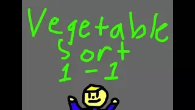
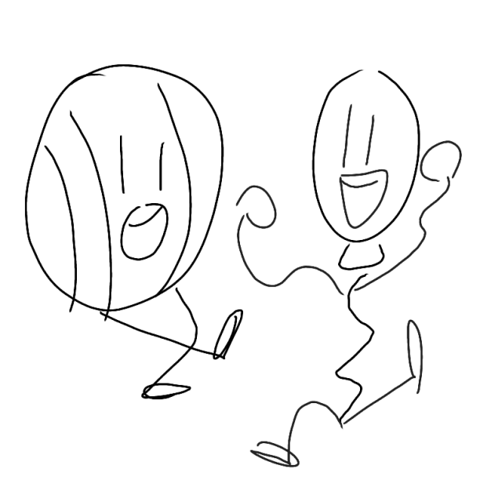
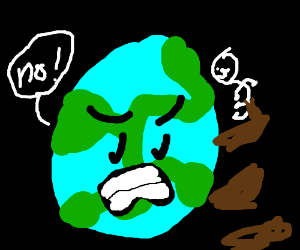
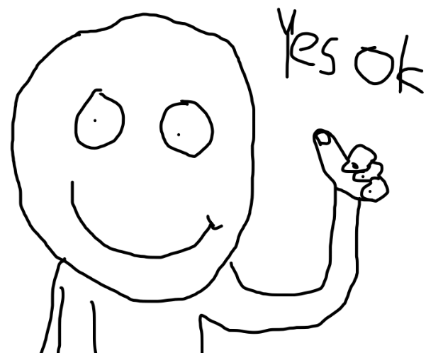
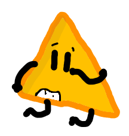
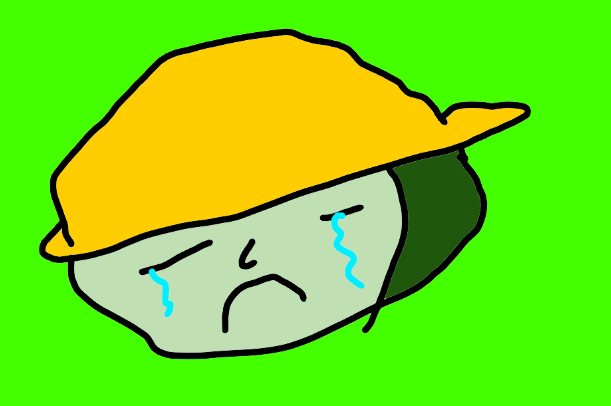
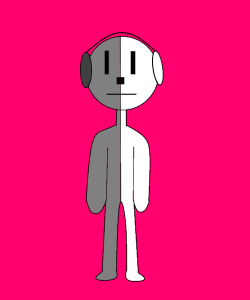
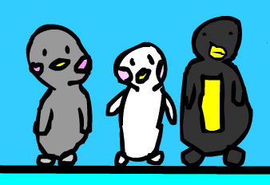
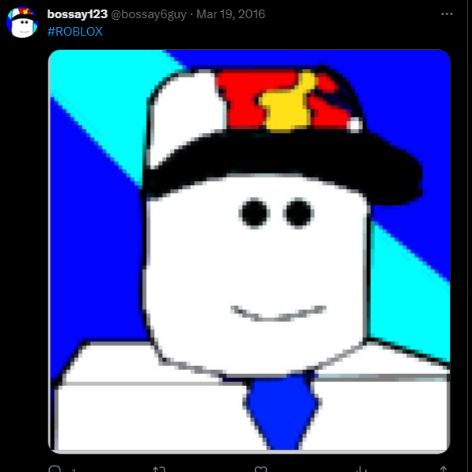

2019 & Before
I am not responsible for any brain damage caused by this page.
| Image | Title & Date | Description |
|---|---|---|
| Broken Egg Cover (2019) | The album cover for my first ever album, Broken Egg. Not sure what my thought process when making it was. Mario 64 Font? Really? | |
| Futuristic City Project (2019) | Be prepared. This is the future of architecture whether you like it or not because I got a 100% on this project. | |
| Ketchup Infused Fries (2019) | Another graphic design project where we were tasked with creating an entirely new product, drawing it, and presenting it Shark Tank style. Our group decided on this by a 2 to 3 vote and the other guy in our group was really pissed we chose this as our product and was extremely reluctant to help, but we carried on and created this. The product aimed to solve the problem of not having ketchup and to make double dipping unnecessary. It came in ketchup, buffalo sauce, and nacho cheese. I lost the nacho cheese version :( | |
| Winter Scene (2019) | A project for my graphic design class. The teacher instructed us to use the many amazing and realistic effects Inkscape had to offer, resulting in this. I'm also pretty sure that this is traced. It really captures the true essence of graphic design. | |
 |
Kirby Commits Tax Fraud (9/25/19) | I think this was the first page of my middle school graphic design sketchbook. If you look closely at the top you can see the sequel to this drawing called "Kirby Gets Resurrected". It's a shame I didn't get a photo of it. Not sure where the sketchbook is now, but it had so much f**ked up drawings on it that I wish I could put here. |
| Dead Weight (8/4/19) | A drawing based on Dead Weight by Jack Stauber. Believe it or not I painted the background myself. It is not a PNG, trust me. | |
| My Plea (8/4/19) | A drawing based on My Plea by Jack Stauber. | |
| I Heard Ya (8/4/19) | For some reason, I've drawn this song twice. | |
| Paw Patrol (9/16/18) | Ryder... You sick f**king b*stard... | |
| bird (6/27/18) | Drawn on Drawception. | |
| Frisk (2/9/18) | KAWAII OVERLOAD!!! | |
| Free anime base use for fre!!!! (2/9/18) | You have my full permission to use this kawaii anime base. | |
| punch (2/6/18) | Drawn on my 3DS. Welll... Actually it's a New 2DS XL, but it's basically the same thing, right? | |
| Best comic (1/30/18) | ??? Can anyobody decode what this means? I created it and I don't even know... | |
|  | Vegetable Sort Thumbnail (1/29/18) | A thumbnail for my short-lived fan-made Rhythm Heaven animation. There were three videos, Vegetable Sort, Syncing Drums, & Dog Tamer. The fourth game was called "Monkey Shoot", but I don't think we got anything done for it besides the music. I distinctly remember finishing this drawing after being sent home early from school for having a headache. |
| Donna (1/27/18) | A very good drawing of Donna from Rhythm Heaven. Donna remains as my favorite character from that game, for I am a fellow donut connoisseur. The best donuts are jelly-filled and nobody should say otherwise. | |
|  | Made in china (1/27/18) | I'm not sure why this piece is titled "Made in china". |
| frok ball (1/21/18) | I drew this to make fun of countryballs. | |
| USA (1/21/18) | I drew this after finding out about countryballs. | |
| loser (1/21/18) | That's gonna leave a mark... | |
| death (1/21/18) | Ouch! | |
| ClickBEAT (1/20/18) | Fanart I drew for an obscure Rhythm Heaven inspired game called ClickBEAT. I'm not sure if it ever got finished or anything. Also, please excuse the profanity. | |
| yum (1/18/18) | I believe this is my first ever animation. | |
| Paddler (1/8/18) | Look at him go! | |
| Dorito (2018) | More Dorito art. This is the highest resolution I could find. | |
| frok lifter (12/31/17) | Fork Lifter has seen better days. | |
| munchy monked (12/31/17) | Munchy Monk has seen better days. | |
| too much snack bad for soul (12/31/17) | Based on a true story. | |
| thingy (12/30/17) | Nothing to explain here. | |
|  | the poop astronaut tries to kill earth with poop (12/23/17) | Drawn on Drawception. |
| Fatality (12/15/17) | Will this guy ever catch a break? | |
| kick (12/15/17) | That smarts! | |
| Wakame (12/13/17) | This Frogette has seen better days. | |
| nic (12/13/17) | Use this image when you think something is nic. | |
|  | yes ok (12/12/17) | Everything will be okay, even if your thumb is backwards. |
| Stepswitcher OC (12/11/17) | This is my stepswitcher OC. His name is Hotstepper. | |
|  | Dorito (12/6/17) | Art for my object OC. I'm not sure what emotion this facial expression or this pose is trying to convey. |
| Detail (11/23/17) | Where were you when it was time for senior photos? | |
|  | Cry Farmer (11/20/17) | Farmers have feelings too... |
| ur noob (11/20/17) | I hated this guy in a discord server so much that I drew this. | |
| Jew (11/10/17) | ??? | |
|  | Lockstep (11/10/17) | Drawing of the stepswitcher from Rhythm Heaven. I sure did know how to use the line and shape tools, but unfortunately, I had no idea how to turn off antialiasing. |
| Winter PFP Stomp Farmer (11/9/17) | I drew this as a winter discord profile picture. I was very proud of it. | |
| i skipd and skaped (11/5/17) | This is art. | |
|  | Showtime Penguins (10/29/17) | The showtime penguins from Rhythm Heaven. Drawn using that flash brush that looks wobbly. |
| Stomp Farmer PFP (2017) | Old discord profile picture. This is the highest resolution I could find of it. | |
| THEM Magazines Cover (4/10/16) | There was this Roblox magazine thingy called THEM Magazines. One time they held a competition to see who could create the best cover for their newest issue. Needless to say, I didn't win. | |
|  | #ROBLOX (3/19/16) | A sick profile picture I drew for my twitter account which was just a poorly traced image of my roblox avatar at the time. I offered a google form for people to fill out if they wanted an awesome profile picture like this, but there were no biters. What a shame. |
| Noob & Guest (2/16/16) | This drawing comes from a DeviantArt account I made in 2016 and never touched again. This was the only drawing on it. | |
| My Singing Monsters Guy (10/11/15) | The profile picture on another old Youtube channel. I drew this on my mom's phone after downloading some magic rainbow drawing app. | |
| bossay123 (11/23/14) | The profile picture on my old YouTube channel back when I thought I could be famous by uploading random Roblox gameplay without any commentary. And to clarify, those aren't nipples and a slice of cheese on his chest. That is Torchic from Pokemon. | |
| pissco (12/1/13) | ...I think I meant to type Picasso. |
{kind=link}